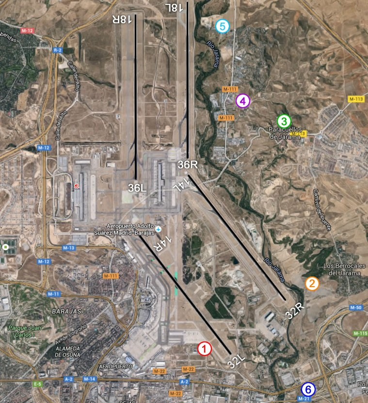

Explora los mejores lugares para dar rienda suelta a tu #aerotranstorno en Madrid, Torrejón y Getafe.
Madrid-Barajas está situado al nordeste de Madrid, siendo el aeropuerto más grande de España. Accesibilidad: El aeropuerto es accesible en coche, autobús y metro. Hay varios puntos alrededor del aeropuerto que son accesibles para el spotting.
¿Que aeronaves puedes encontrar aquí?Mapa creado por 2maletasy1destino
Punto 1, Los Conejos: muy cerca de la terminal de carga. Es una zona vallada, pero que está abierta. No obstante, cada uno accede bajo su propia responsabilidad.
Punto 2, Los Berrocales: un clásico para ver los aterrizajes por la 32R (o despegues por la 14L). Está más lejos de las pistas y hay que caminar unos 10 minutos, pero vale la pena para ver aterrizajes desde un punto elevado.
Punto 3, El Mirador de Paracuellos.
Punto 4, La Cruz: en Paracuellos del Jarama hay una gran cruz blanca junto al cementerio. Subiendo a esa colina se tiene una vista mucho mejor de los despegues de la 36R (o aterrizajes de la 18L).
Punto 5, La Cementera: en el camino junto a una cementera, los aviones que despegan por la 36R pasan prácticamente por encima.
Punto 6, El Centro Comercial: está cerca de las cabeceras de pista y es un buen sitio para ver los aviones que van a aterrizar por la 32L y 32R, aunque hay demasiados obstáculos para hacer fotos..
Equipo Recomendado: Una cámara con un buen zoom o teleobjetivo es esencial para capturar aviones a distancia. También es recomendable llevar un trípode.
Mejores Horas para Spotting: Las horas tempranas de la mañana y las tardes suelen ser mejores en términos de iluminación y actividad de vuelo.
Aplicaciones y Herramientas: Aplicaciones como FLIGHTRADAR pueden ser útiles para rastrear vuelos y planificar sesiones de spotting.La Base Aérea de Torrejón es una instalación militar ubicada en la localidad de Torrejón de Ardoz,Km. 20 de la A2. Tiene una larga historia que se remonta a la década de 1950 cuando fue utilizada por las fuerzas aéreas de los Estados Unidos. Posteriormente, fue transferida a la Fuerza Aérea Española en 1988. (Parque Corredor y Oasiz) nos facilitarán el aparcamiento.
Exploremos los aerodinos de esta BaseVistas Panorámicas: Hemos de tener en cuenta que al hablar de una base militar no podemos acceder a sus instalaciones, si bien la fotografía está permitida en su perímetro.La cabecera de pista está situada en la salida 20 de la A2, dirección Ajalvir. También podemos continuar hacia la M50 y nos toparemos con la rotonda del INTA, que curiosamente, tiene situado un C-212 Aviocar en el centro.
Alrededores del Aeropuerto: En la terraza del centro comercial Oasiz veremos también la parte civil de la base, y si nos adentramos hacia la urbanización los Berrocales del Jarama, contaremos con uno de los mejores miradores.
Equipo Recomendado: Similar al recomendado para el aeropuerto de Barajas.
Mejores Horas para Spotting: Miercoles a media mañana y a partir de las 20h.
Aplicaciones y Herramientas: En este caso Flight Radar no nos "chiva" las aeronaves militares, por lo que utilizaremos ADS-B ExchangeLa Base Aérea de Getafe es una instalación militar situada en la Plaza del Coronel Enrique Polanco. Tiene una larga historia que se remonta al siglo XIX, cuando se utilizaba como campo de vuelo experimental. A lo largo de los años, ha desempeñado un papel importante en el desarrollo y la fabricación de aeronaves en España.
Conoce sus aeronavesTe facilitamos este mapa en el que puedes localizar cuales son los puntos permitidos y restringidos para obtener las mejores capturas: Mapa creado porSpotterGuide.net
Equipo Recomendado: Cámara réflex digital (DSLR) o cámara sin espejo, lentes de zoom, trípode y filtros polarizadores.
Mejores Horas para Spotting: En este caso depende de la semana, si tienen ejercicios previstos o se espera alguna entrega en la factoría Airbus, que comparte pista con la base aérea.
La Base Aérea de Cuatro Vientos es una de las bases aéreas más antiguas de España y tiene una rica historia en la aviación. Fue fundada en 1911 y ha sido testigo de importantes eventos aéreos a lo largo de los años. Cuatro Vientos también es un aeropuerto civil que sirve a la aviación general y la formación de pilotos privados. Alberga varias escuelas de vuelo y empresas de aviación. Famosa por albergar el Museo del Aire de España, que exhibe una impresionante colección de aeronaves históricas, incluyendo aviones militares, helicópteros y más.
En esta también hay helicópteros...Museo del Aire, puente de la A5, Camino de la Ermita de los Santos, y el lado sur de la pista.
Equipo Recomendado: Cámara réflex digital (DSLR) o cámara sin espejo, lentes de zoom, trípode y filtros polarizadores.
Mejores Horas para Spotting: Puede consultarse en Flight Radar al contar con una parte de aeródromo civil.